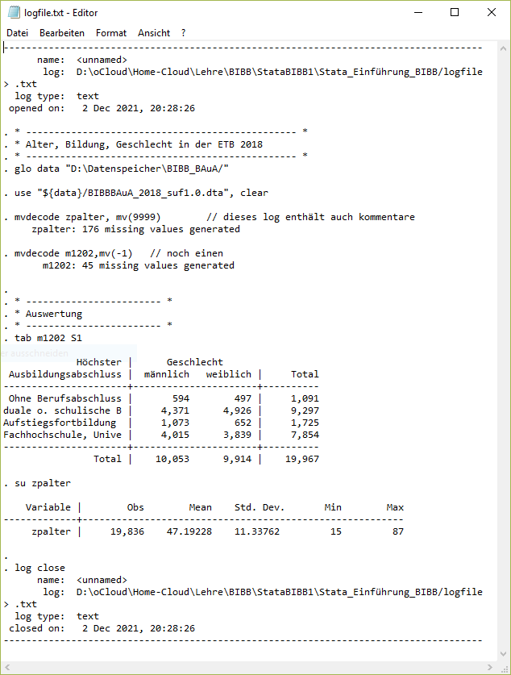

13 Anhang - fortgeschrittene Themen
13.1 Import und Aufbereitung aus Excel
13.1.1 Datenimport aus Excel-Datei
Unter file -> import -> excel spreadsheet können wir einen Excel-Import erstellen, den Befehl aus dem Ausgabefenster können wir dann kopieren:
import excel "D:\oCloud\Home-Cloud\Lehre\BIBB\StataBIBB1\Stata_Einführung_BIBB\Rohdaten.xlsx", sheet("Sheet1") firstrow case(lower) clear
// oder:
cd "D:\oCloud\Home-Cloud\Lehre\BIBB\StataBIBB1\Stata_Einführung_BIBB\"
import excel "Rohdaten.xlsx", sheet("Sheet1") firstrow case(lower) clear
* Überblick gewinnen
list
browse id x1 x2 x3 x4
1. 1 1 0 -9 2
2. 2 -4 -4 1 1
3. 3 2 0 -4 3
4. 4 1 -4 -9 3
5. 5 2 -9 1 2
6. 6 -4 1 -9 1
7. 7 1 -4 1 5
8. 8 -4 -9 0 4
9. 9 -4 -4 1 2
10. 10 -4 0 -4 5
11. 11 -4 1 -4 1
12. 12 2 -4 -9 5
13. 13 -4 -9 -9 5
14. 14 2 -4 -9 1
15. 15 -4 -4 -9 3 Hier eine kleine (Fantasie-)Doku zum Datensatz:
| Variablenname | Beschreibung | Details |
|---|---|---|
| id | Befragten-Identifikationsnummer | |
| x1 | Geschlecht | 1 = Frau, 2 = Mann, -4 keine Angabe |
| x2 | Haustiere? | 0 = nein, 1 = ja, -4 keine Angabe, -9 Datenfehler |
| x3 | Frühaufsteher? | 0 = nein, 1 = ja, -4 keine Angabe, -9 Datenfehler |
| x4 | 5er Likert-Skala: Stata macht Spaß | 1 = trifft überhaupt nicht zu |
| 5 = tifft voll zu |
13.1.2 Variablen umbenennen: rename
Dann benennen wir die Variablen in sprechendere Namen um rename alt neu:
rename x1 gender
rename x2 pets
rename x3 earlybird
rename x4 stata id gender pets earlyb~d stata
1. 1 1 0 -9 2
2. 2 -4 -4 1 1
3. 3 2 0 -4 3
4. 4 1 -4 -9 3
5. 5 2 -9 1 2
6. 6 -4 1 -9 1
7. 7 1 -4 1 5
8. 8 -4 -9 0 4
9. 9 -4 -4 1 2
10. 10 -4 0 -4 5
11. 11 -4 1 -4 1
12. 12 2 -4 -9 5
13. 13 -4 -9 -9 5
14. 14 2 -4 -9 1
15. 15 -4 -4 -9 3 13.1.3 Variablenbeschreibung: label variable
label variable gender "Geschlecht"
label variable pets "Haustierbesitz?"
label variable earlybird "Frühaufsteher"
label variable stata "Stata macht Spaß"Contains data
obs: 15
vars: 5
-------------------------------------------------------------------------------
storage display value
variable name type format label variable label
-------------------------------------------------------------------------------
id byte %10.0g id
gender byte %10.0g Geschlecht
pets byte %10.0g Haustierbesitz?
earlybird byte %10.0g Frühaufsteher
stata byte %10.0g Stata macht Spaß
-------------------------------------------------------------------------------
Sorted by:
Note: Dataset has changed since last saved.13.1.4 Werte labeln label values
Mit .buchstabe können wir fehlende Werte unterscheidbar halten, so können wir sowohl “keine Angabe” als auch “Datenfehler als Missing überschreiben und trotzdem beide Varianten unterscheidbar halten:
tab gender
replace gender = .k if gender == -4
tab gender
tab gender, m
label define gend_lab 1 "Frau" 2 "Mann" .k "keine Angabe"
lab val gender gend_lab
tab gender
tab gender, m(8 real changes made, 8 to missing)
Geschlecht | Freq. Percent Cum.
------------+-----------------------------------
1 | 3 42.86 42.86
2 | 4 57.14 100.00
------------+-----------------------------------
Total | 7 100.00
Geschlecht | Freq. Percent Cum.
-------------+-----------------------------------
Frau | 3 20.00 20.00
Mann | 4 26.67 46.67
keine Angabe | 8 53.33 100.00
-------------+-----------------------------------
Total | 15 100.00Für die weiteren Variablen können wir ähnlich vorgehen:
lab def dummy_lab 0 "Nein" 1 "Ja" .k "keine Angabe" .d "Datenfehler"
lab val earlybird dummy_lab
tab earlybird
recode earlybird (-9=.d) (-4=.k)
* oder:
replace earlybird = .k if earlybird == -4
replace earlybird = .d if earlybird == -9
tab earlybird,m(earlybird: 10 changes made)
Frühaufstehe |
r | Freq. Percent Cum.
-------------+-----------------------------------
Nein | 1 6.67 6.67
Ja | 4 26.67 33.33
Datenfehler | 7 46.67 80.00
keine Angabe | 3 20.00 100.00
-------------+-----------------------------------
Total | 15 100.00und wir verwenden eine fortgeschrittene Programmierung: foreach-Schleife
foreach v of varlist earlybird pets {
replace `v' = .k if `v' == -4
replace `v' = .d if `v' == -9
lab val `v' dummy_lab
}
// oder
foreach v of varlist earlybird pets {
recode `v' (-9=.d) (-4=.k)
lab val `v' dummy_lab
}(earlybird: 10 changes made)
(pets: 10 changes made)13.1.5 exportieren
compress // variablen auf minimale speichergröße bringen
save "Datensatz_ready.dta", replaceDieser Datensatz kann mit use geladen werden.
13.2 adopath
Mit adopath können wir die Ordner anzeigen, wo die ados liegen.
Mit which können wir den Speicherort eines ado ansehen:
which mdescc:\ado\plus\m\mdesc.ado
*! mdesc Version 2.1 dan_blanchette@unc.edu 25Aug2011
*! Rose Anne Medeiros | Dan Blanchette
*! Department of Sociology, Rice Univ | the carolina population center, unc-chMit adopath ++ PFAD können wir ado aus zusätzlichen Ordner verwenden:
adopath ++ "D:\oCloud\Home-Cloud\Lehre\BIBB\StataBIBB1\Stata_Einführung_BIBB/u"13.3 log file
Mit log-Files können wir alles mitprotokollieren, was im Outputfenster passiert. Wir starten ein log-File mit log using dateiname. Ab dann wird alles in dieser Datei mitgeschrieben, was wir uns im Outputfenster anzeigen lassen:
log using "C:\Pfad\zum\Ordner/log/logfile.txt", text replace // mit replace wird die Datei ggf überschrieben
* ------------------------------------------------ *
* Alter, Bildung, Geschlecht in der ETB 2018
* ------------------------------------------------ *
glo data "D:\Datenspeicher\BIBB_BAuA/"
use "${data}/BIBBBAuA_2018_suf1.0.dta", clear
mvdecode zpalter, mv(9999) // dieses log enthält auch kommentare
mvdecode m1202,mv(-1) // noch einen
* ------------------------ *
* Auswertung
* ------------------------ *
tab m1202 S1
su zpalter
log close
13.4 Beobachtungen markieren mit gen & if
Die Kombination aus gen und if hilft uns, wenn wir eine Variable nur für einige Zeilen erstellen wollen. Das hilft insbesondere, wenn wir bestimmte Beobachtungen markieren wollen. Beispielsweise Frauen (S1 = 1), die einer Nebentätigkeit (nt = 1) nachgehen:
gen nt_frauen = 1 if S1 == 1 & nt == 1(19,136 missing values generated)Nur wenn beide Bedingungen zutreffen, wird unter nt_frauen eine 1 abgelegt:
list S1 nt nt_frauen in 19671/19675, clean noobs abb(12) S1 nt nt_frauen
weiblich keine Ne .
männlic mindeste 1
weiblich keine Ne .
männlic mindeste 1
weiblich keine Ne . In der alltäglichen Arbeit hilft das manchmal, wenn man spezielle Fälle immer wieder aufrufen möchte und nicht immer die “ausgeschriebenen” if-Bedingungen verwenden möchte.
13.5 Index bilden
In Kapitel 5 hatten wir mit recode eine Möglichkeit kennen gelernt, wie Codierungen verändert werden können.
Ein typischer Fall ist das “Umdrehen” von Skalen in einer Item-Batterie, sodass in beiden/allen Variablen höhere Werte auch inhaltlich das gleiche bedeuten.
In der BIBB/BAuA 2018 könnten wir bspw. einen Index für die Autonomie/Einbindung am Arbeitsplatz erstellen, indem wir die Antworten aus den folgenden beiden Fragen addieren:
+ F700_02: Wie häufig kommt es vor, dass Sie Ihre eigene Arbeit selbst planen und einteilen können?
+ F700_08: Wie oft kommt es vor, dass Sie nicht rechtzeitig über einschneidende Entscheidungen, Veränderungen oder Pläne für die Zukunft informiert werden?
Hier wäre es also so, dass der niedrigste Wert (1 = Häufig) jeweils etwas anderes bedeutet. Im Fall von F700_08
Variable betrachten, sehen wir
recode F700_02 (4=1) (3=2) (2=3) (1=4), into(F700_02_rev)gen index = (F700_02_rev + F700_10)/2Inhaltlich ist das sicher nicht 100% überzeugend - hier geht’s um die technische Umsetzung
Tipp
Man kann in diesem speziellen Fall einer “umgedrehten” Skala können wir auch einfach “höchster Wert + 1 minus Variablenwert rechnen.” Im Fall von F700_02 ist der höchste Wert 4, also würden wir 4-F700_02 rechnen:
gen F700_02_rev2 = 5 - F700_02